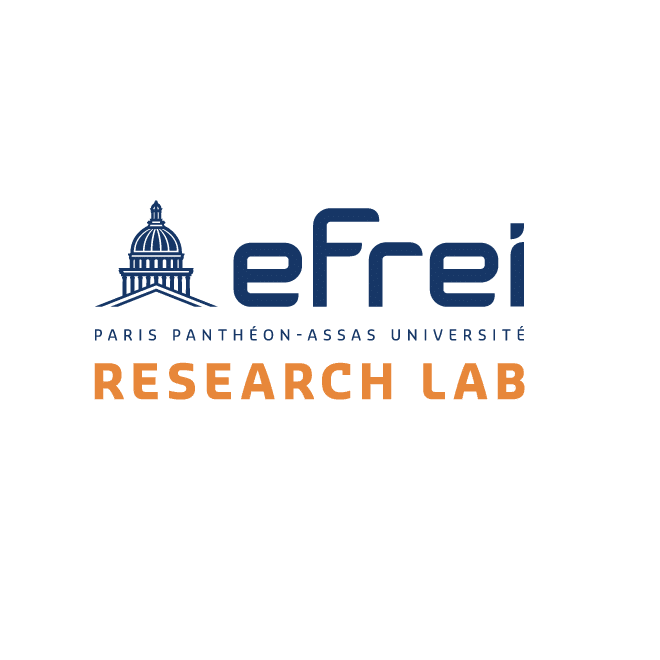

Le corps enseignant
Le corps enseignant de l'Efrei se distingue par son expertise et sa pédagogie moderne. Passionnés et proches de leurs étudiants, les professeurs rendent les concepts techniques accessibles et concrets. Grâce à leur lien étroit avec le monde professionnel, ils offrent une formation actuelle, exigeante et tournée vers les enjeux technologiques de demain.

Notre corps professoral transcende la simple transmission du savoir.
Leur engagement dans la recherche fondamentale et appliquée garantit à nos étudiants un accès privilégié et direct aux sources mêmes de l'innovation.
Nos axes de recherche
Innover au service de la science et de la société
Projets qui façonnent notre futur
Découvrez les projets de recherche de l'Efrei Research Lab, alliant innovation, éthique et impact sociétal.
ANR - STREAMédia (2025-2029)
STREAMédia développe un modèle d'IA multimodal pour analyser les genres des vidéos politiques issues de la télévision et des plateformes numériques.
PHC-Cèdre - CryptHO - Santé (2025-2027)
CryptHO-Santé conçoit des solutions de cryptographie homomorphe légère pour sécuriser les données médicales dans des systèmes de santé intelligents.
STIC - AMSUD - idNext (2025-2027)
idNext crée un cadre d'identité numérique décentralisée pour les systèmes de transport intelligents basé sur la blockchain et l'edge computing.